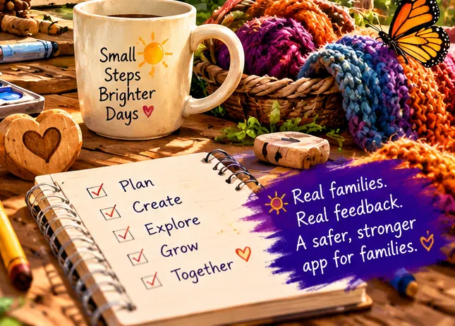

Be an Ai-Neut tester!
Help us test our journal and family organizer before it reaches the Google Play Store. Real use, real feedback, a safer and stronger app for families.
Approved tester? Sign in to Neut School
Peek at Neut School, the training our testers take, and how we protect kids and privacy.
OrganizeConnectSupportBelong


How testing works
It takes a couple of minutes to sign up. We check every request by hand, then send you the private join link.
Send us your Gmail
Tap Sign up to test. It opens an email to us with a few blanks. Fill them in and press Send.
No email app? Write to support@ai-neut.com with the subject “Ai-Neut tester” and your Gmail.
Get your join link
We add your Gmail to the test, usually within a day or two, and email you the link and install steps. Open it on your phone, tap Become a tester, and install Ai-Neut from the Play Store.
Keep it 14 days and tell us
Keep the app installed for 14 days in a row, open it now and then, and tell us honestly what could be better, safer or more helpful for kids and families.
What it takes
- An Android phone (Android 7 or newer)
- The Gmail address you use on that phone
- Keeping the app installed for 14 days in a row
- Opening it now and then, and telling us honestly what could be better or safer
A journal and a family organizer
Here’s what we’d love you to try. Use it in real life and tell us what works, what doesn’t, and what could be better.
Calendar
Keep schedules, deadlines and events in one place.
Journal
Capture important moments, notes and information.
Microphone Assistant
Voice help for how-to’s, FAQs and getting around the app.
Lists & chores
Stay organized at home and on the go.
Family organizer
Tools to help families stay connected.
Glass Newt
Music inside the app. Warm up with the glass toy below.
Please try the Microphone Assistant!
Tap the mic in the app and talk to it naturally. Ask how to use features, where to find things, or questions about the app. We’re still building what it knows and where it can take you, so we especially want to hear what works and what doesn’t.
“How do I add an event?”
🎶 Glass Newt warm-up
Glass Newt brings music into Ai-Neut. Tap the glasses (or use your keyboard) to play a little tune. Sound plays only when you tap.
The suggested 14-day testing plan
Just our suggested plan. Google only asks you to stay in the test for 14 days. Tick off each day as you go. Your progress saves on this device only.
Your progress
Tap a day when you’ve done it. Small steps, brighter days.
Days 1–3
Get started. Set up and look around.
Days 4–7
Use it in daily life. Make it part of your week.
Days 8–11
Check reliability. Make sure it holds up.
Days 12–14
Final review + send feedback. Wrap up and tell us honestly.
Feedback questions
Flip a card to see what to look for. Answer one card or all nine. Each one can open an email to us with the questions already filled in.
1. General experience
- What were you trying to do?
- What happened when you tried it?
- What did you expect to happen?
- Could you complete the task?
- Did the problem happen again?
- What device and Android version were you using?
2. Calendar
- Could you create, edit and delete events?
- Was it easy to set reminders?
- Did events sync and stay saved?
- Was the calendar layout easy to understand?
- What made it easier or more confusing?
3. Journaling
- Could you create, edit and save entries?
- Was it easy to organize or find past entries?
- Did anything get lost or not save?
- What worked well?
- What would make it more useful?
4. Lists & chores
- Could you create and check off items?
- Was it easy to organize by person, category or due date?
- Did items stay saved?
- What worked well?
- What would make it easier to use?
5. Family organization
- Was it easy to set up and manage family members?
- Did sharing or connecting work as expected?
- Were permissions clear?
- What worked well?
- What would make it more useful for families like yours?
6. Microphone Assistant
- What did you ask the microphone to do?
- Did it understand and respond correctly?
- What commands or questions didn’t work?
- What did you expect it to do?
- What other commands or info would help (how-to’s, FAQs, navigation)?
7. Performance & reliability
- Did the app load quickly?
- Did you have any crashes or unexpected closes?
- Did it freeze, lag or run slowly?
- Did information save correctly?
- Did the app work reliably over the 14 days?
8. Privacy & safety
- Were the permissions clear and easy to understand?
- Did anything raise concerns about privacy or safety?
- Did you feel comfortable using the app for family organization?
- What would make you feel safer or more confident?
9. Final thoughts
- What worked best for you?
- What were the biggest problems?
- What features matter most for families like yours?
- What would you like to see added or improved?
- If you could sum up your experience in a few sentences, what would you say?
Make your tester badge
Add your first name, pick a color and a sticker, then save or share it. Your badge is made right on your device. Nothing is uploaded.
Your badge shows your 14-day progress from the plan above.
Send us feedback
Bugs, questions, concerns or ideas: send them to support@ai-neut.com. Pick one to start an email with a few prompts filled in.

Your privacy
We use your Gmail only to add you to the Google Play test and to answer you. We never sell it or share it, and we delete it when testing ends. Please don’t send us anything about your kids. Your checklist and badge stay on your device. See our Privacy Policy.